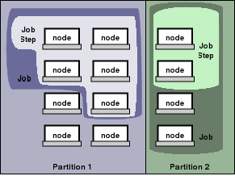

Quick Start User Guide
Overview
The Simple Linux Utility for Resource Management (SLURM) is an open source,
fault-tolerant, and highly scalable cluster management and job scheduling system
for large and small Linux clusters. SLURM requires no kernel modifications for
its operation and is relatively self-contained. As a cluster resource manager,
SLURM has three key functions. First, it allocates exclusive and/or non-exclusive
access to resources (compute nodes) to users for some duration of time so they
can perform work. Second, it provides a framework for starting, executing, and
monitoring work (normally a parallel job) on the set of allocated nodes. Finally,
it arbitrates conflicting requests for resources by managing a queue of pending
work.
Architecture
As depicted in Figure 1, SLURM consists of a slurmd daemon running on
each compute node, a central slurmctld daemon running on a management node
(with optional fail-over twin), and five command line utilities: srun,
scancel, sinfo, squeue, and scontrol, which can run
anywhere in the cluster.

Figure 1. SLURM components
The entities managed by these SLURM daemons, shown in Figure 2, include nodes,
the compute resource in SLURM, partitions, which group nodes into logical
disjoint sets, jobs, or allocations of resources assigned to a user for
a specified amount of time, and job steps, which are sets of (possibly
parallel) tasks within a job. Priority-ordered jobs are allocated nodes within
a partition until the resources (nodes) within that partition are exhausted. Once
a job is assigned a set of nodes, the user is able to initiate parallel work in
the form of job steps in any configuration within the allocation. For instance,
a single job step may be started that utilizes all nodes allocated to the job,
or several job steps may independently use a portion of the allocation.

Figure 2. SLURM entities
Commands
Man pages exist for all SLURM daemons, commands, and API functions. The command
option --help also provides a brief summary of
options. Note that the command options are all case insensitive.
srun is used to submit a job for execution,
allocate resources, attach to an existing allocation, or initiate job steps. Jobs
can be submitted for immediate or later execution (e.g., batch). srun
has a wide variety of options to specify resource requirements, including: minimum
and maximum node count, processor count, specific nodes to use or not use, and
specific node characteristics (so much memory, disk space, certain required features,
etc.). Besides securing a resource allocation, srun
is used to initiate job steps. These job steps can execute sequentially or in
parallel on independent or shared nodes within the job's node allocation.
scancel is used to cancel a pending
or running job or job step. It can also be used to send an arbitrary signal to
all processes associated with a running job or job step.
scontrol is the administrative tool
used to view and/or modify SLURM state. Note that many scontrol
commands can only be executed as user root.
sinfo reports the state of partitions
and nodes managed by SLURM. It has a wide variety of filtering, sorting, and formatting
options.
squeue reports the state of jobs or
job steps. It has a wide variety of filtering, sorting, and formatting options.
By default, it reports the running jobs in priority order and then the pending
jobs in priority order.
Examples
Execute /bin/hostname on four nodes (-N4).
Include task numbers on the output (-l). The
default partition will be used. One task per node will be used by default.
adev0: srun -N4 -l /bin/hostname
0: adev9
1: adev10
2: adev11
3: adev12
Execute /bin/hostname in four
tasks (-n4). Include task numbers on the output
(-l). The default partition will be used. One
processor per task will be used by default (note that we don't specify a node
count).
adev0: srun -n4 -l /bin/hostname
0: adev9
1: adev9
2: adev10
3: adev10
Submit the script my.script for later execution (-b).
Explicitly use the nodes adev9 and adev10 (-w "adev[9-10]";
note the use of a node range expression). One processor per task will be used
by default. The output will appear in the file my.stdout (-o
my.stdout). By default, one task will be initiated per processor on the
nodes. Note that my.script contains the command /bin/hostname
that executed on the first node in the allocation (where the script runs) plus
two job steps initiated using the srun command
and executed sequentially.
adev0: cat my.script
#!/bin/sh
/bin/hostname
srun -l /bin/hostname
srun -l /bin/pwd
adev0: srun -w "adev[9-10]" -o my.stdout -b my.script
srun: jobid 469 submitted
adev0: cat my.stdout
adev9
0: adev9
1: adev9
2: adev10
3: adev10
0: /home/jette
1: /home/jette
2: /home/jette
3: /home/jette
Submit a job, get its status, and cancel it.
adev0: srun -b my.sleeper
srun: jobid 473 submitted
adev0: squeue
JobId Partition Name User St TimeLim Prio Nodes
473 batch my.sleep jette R UNLIMIT 0.99 adev9
adev0: scancel 473
adev0: squeue
JobId Partition Name User St TimeLim Prio Nodes
Get the SLURM partition and node status.
adev0: sinfo
PARTITION NODES STATE CPUS MEMORY TMP_DISK NODES
--------------------------------------------------------------------------------
debug 8 IDLE 2 3448 82306 adev[0-7]
batch 1 DOWN 2 3448 82306 adev8
7 IDLE 2 3448-3458 82306 adev[9-15]
MPI
MPI use depends upon the type of MPI being used.
Instructions for using several varieties of MPI with SLURM are
provided below.
Quadrics MPI relies upon SLURM to
allocate resources for the job and srun
to initiate the tasks. One would build the MPI program in the normal manner
then initiate it using a command line of this sort:
srun [OPTIONS] <program> [program args]
LAM/MPI relies upon the SLURM
srun command to allocate resources using
either the --allocate or the
--batch option. In either case, specify
the maximum number of tasks required for the job. Then execute the
lamboot command to start lamd daemons.
lamboot utilizes SLURM's
srun command to launch these daemons.
Do not directly execute the srun command
to launch LAM/MPI tasks. For example:
adev0: srun -n16 -A # allocates resources and spawns shell for job
adev0: lamboot
adev0: mpirun -np 16 foo args
1234 foo running on adev0 (o)
2345 foo running on adev1
etc.
adev0: lamclean
adev0: lamhalt
adev0: exit # exits shell spawned by initial srun command
HP-MPI uses the
mpirun command with the -srun
option to launch jobs. For example:
$MPI_ROOT/bin/mpirun -TCP -srun -N8 ./a.out
BlueGene MPI relies
upon SLURM to create the resource allocation and then uses the native
mpirun command to launch tasks.
Build a job script containing one or more invocations of the
mpirun command. Then submit
the script to SLURM using srun
command with the --batch option. For example:
srun -N2 --batch my.script
|